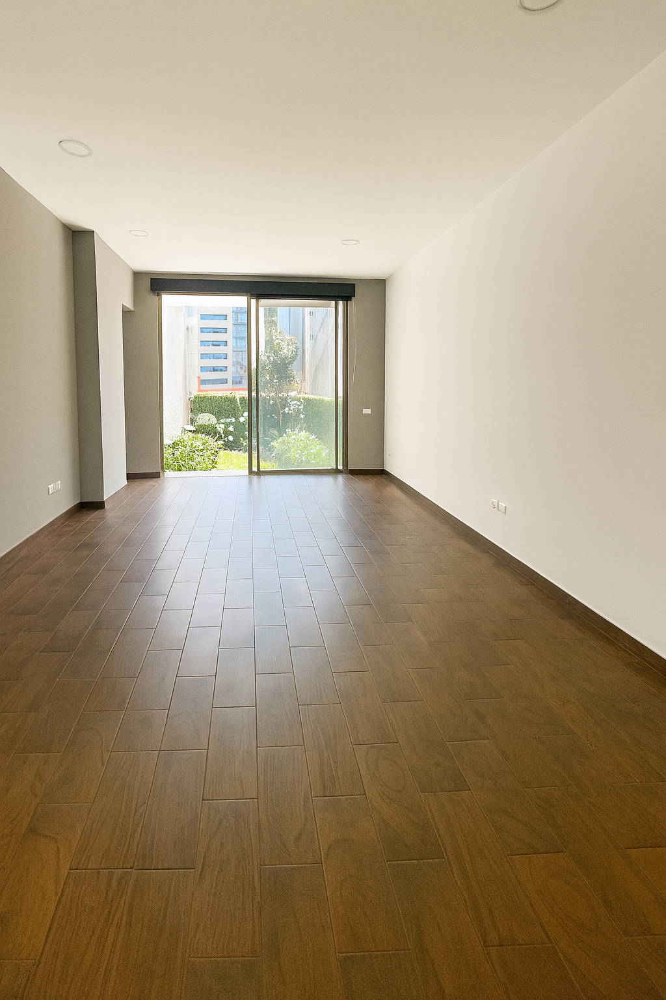

<!DOCTYPE html>
<html lang="es">
<head>
<meta charset="utf-8" />
<meta name="viewport" content="width=device-width, initial-scale=1" />
<title>Residencia de Lujo en Santa Fe – Paseo de Las Lomas (#146)</title>
<!-- Tipografías -->
<link href="https://fonts.googleapis.com/css2?family=Playfair+Display:wght@600;700&family=Inter:wght@300;400;600&display=swap" rel="stylesheet">

<style>
  :root{
    --ink:#0d0f12;         /* negro antracita */
    --ink-2:#1a1f24;
    --paper:#ffffff;       /* blanco */
   --muted:#ececec;       /* gris perla claro */
    --gold:#c9a227;        /* acento dorado elegante */
    --gap:20px;
    --max:1100px;
  }

  *{box-sizing:border-box}
  html,body{margin:0;background:#eef1f4;color:#1d232a}
  img{max-width:100%;display:block}

  /* Contenedor de "página" tipo brochure */
  .sheet{
    max-width:var(--max);
    margin:28px auto;
    background:var(--paper);
    box-shadow:0 12px 28px rgba(0,0,0,.12);
    overflow:hidden;
    border-radius:14px;
  }
  .grid{display:grid;gap:var(--gap)}
  .wrap{padding:32px clamp(16px,4vw,40px)}
  .two{grid-template-columns:1.05fr .95fr}
  @media (max-width:930px){ .two{grid-template-columns:1fr} }

  /* Tipos */
  h1,h2,h3{font-family:"Playfair Display",serif;margin:0;color:var(--ink)}
  h1{font-size:clamp(28px,4.2vw,44px);line-height:1.08;letter-spacing:.2px}
  h2{font-size:clamp(22px,3vw,30px);letter-spacing:.2px}
  h3{font-size:clamp(14px,1.7vw,16px);letter-spacing:.1em;text-transform:uppercase;color:#2a2f36}
  p,li,small{font-family:Inter,system-ui,Segoe UI,Roboto,Arial,sans-serif;font-size:15px;line-height:1.55;color:#262b31}
  .muted{color:var(--muted)}
  .lead{font-size:18px;line-height:1.55;color:#2a2f36}

  /* Bloques visuales */
  .hero{
    background:#0f1419;
    display:grid;
    grid-template-columns:1.1fr .9fr;
  }
  .hero-text{padding:40px clamp(18px,4vw,52px)}
.hero-text h1{margin-bottom:8px;color:#f2f2f2} /* Título gris muy claro */
.hero-text .sub{
  margin:.6rem 0 1.2rem;
  color:#d9d9d9; /* gris perla suave para el subtítulo */
}
.hero-text .lead{
  color:#e0e0e0; /* gris claro para el párrafo */
}


  .band{
    background:var(--ink);
    color:#fff;
    padding:18px clamp(18px,4vw,40px);
    display:grid;
    grid-template-columns:1fr auto;
    align-items:center;
    gap:12px;
  }
  .kpis{display:flex;flex-wrap:wrap;gap:8px}
  .k{
    border:1px solid rgba(255,255,255,.12);
    background:rgba(255,255,255,.04);
    padding:10px 12px;border-radius:10px;min-width:140px
  }
  .k b{display:block;font:600 12px Inter;color:#cbd5e1;text-transform:uppercase;letter-spacing:.06em;margin-bottom:2px}
  .k span{font:600 16px Inter;color:#fff}

  .section-title{padding:22px clamp(18px,4vw,40px) 4px}
  .gallery{padding:0 clamp(18px,4vw,40px) 24px}
  .g-3{display:grid;gap:12px;grid-template-columns:repeat(3,1fr)}
  .g-4{display:grid;gap:12px;grid-template-columns:repeat(4,1fr)}
  .g-2{display:grid;gap:12px;grid-template-columns:repeat(2,1fr)}
  @media (max-width:860px){ .g-4{grid-template-columns:repeat(2,1fr)} }
  @media (max-width:720px){ .g-3{grid-template-columns:repeat(2,1fr)} }
  @media (max-width:520px){ .g-3,.g-4,.g-2{grid-template-columns:1fr} }

  .card{
    border-radius:12px;overflow:hidden;background:#0b0d10
  }
  .card img{width:100%;height:240px;object-fit:cover}
  .cap{padding:10px 12px;color:#cdd6df;font:500 12.5px Inter;background:linear-gradient(180deg,#0f1318,#0b0e12)}

  .black{background:var(--ink);color:#fff}
  .black .wrap{padding-top:26px;padding-bottom:28px}

  /* Ubicación */
  .mapblock{background:#0e1216}
  .mapflex{display:grid;gap:14px;grid-template-columns:1.1fr .9fr}
  @media (max-width:930px){ .mapflex{grid-template-columns:1fr} }
  .mapimg{height:360px;border-radius:12px;overflow:hidden}
  .mapimg img{width:100%;height:100%;object-fit:cover;filter:saturate(.95) contrast(1.05)}

  /* Acentos */
  .gold{color:var(--gold)}
  .rule{height:1px;background:linear-gradient(90deg,transparent,var(--gold),transparent);margin:12px 0 0;width:140px}

  /* ✅ Ajuste de color de texto en secciones oscuras */
.black .wrap,
.black .wrap ul,
.black .wrap li,
.black .wrap p,
.black .wrap small {
  color: #f4f4f4 !important; /* gris perla claro */
  }
/* Print-to-PDF */
  @media print{
    body{background:#fff}
    .sheet{box-shadow:none;margin:0;border-radius:0}
    .hero-photo img{filter:none}
    a[href^="http"]::after{content:""}
}

  <!-- Meta Pixel Code -->
<script>
  !function(f,b,e,v,n,t,s)
  {if(f.fbq)return;n=f.fbq=function(){n.callMethod?
  n.callMethod.apply(n,arguments):n.queue.push(arguments)};
  if(!f._fbq)f._fbq=n;n.push=n;n.loaded=!0;n.version='2.0';
  n.queue=[];t=b.createElement(e);t.async=!0;
  t.src=v;s=b.getElementsByTagName(e)[0];
  s.parentNode.insertBefore(t,s)}(window, document,'script',
  'https://connect.facebook.net/en_US/fbevents.js');
  fbq('init', '2219365765240362'); 
  fbq('track', 'PageView');
</script>
<noscript>
  
</noscript>
<!-- End Meta Pixel Code -->

</head>

<body>

  <!-- PORTADA -->
  <section class="sheet hero">
    <div class="hero-text">
      <h1>Residencia de lujo en Santa Fe</h1>
      <div class="sub">Privada Ernest J. Piper <b>#146</b> · Paseo de Las Lomas, Santa Fe</div>
      <div class="rule"></div>
      <p class="lead">
        Arquitectura contemporánea con líneas limpias, gran iluminación natural y
        espacios generosos. Privacidad y vistas arboladas; perfecta para vivir y trabajar.
      </p>
    </div>
    <div class="hero-photo">
      
    </div>
    <div class="band">
      <div class="kpis">
        <div class="k"><b>Terreno</b><span>326 m²</span></div>
        <div class="k"><b>Construcción</b><span>420 m²</span></div>
        <div class="k"><b>Niveles</b><span>3</span></div>
        <div class="k"><b>Estacionamiento</b><span>3 techados</span></div>
        <div class="k"><b>Recámaras</b><span>3</span></div>
        <div class="k"><b>Baños</b><span>3 + ½ visitas</span></div>
        <div class="k"><b>Roof garden</b><span>65 m²</span></div>
        <div class="k"><b>Jardín</b><span>41 m²</span></div>
        <div class="k"><b>A/A</b><span>Solo rec. principal</span></div>
        <div class="k"><b>Calefacción</b><span>En recámaras y áreas</span></div>
      </div>
      <small class="muted">Precio de Venta $16,550,000.- M.N.</small>
    </div>
  </section>

  <!-- DESCRIPCIÓN GENERAL -->
  <section class="sheet">
    <div class="section-title">
      <h3>Descripción general</h3>
      <h2>Privacidad, funcionalidad y confort <span class="gold">—</span> luz natural en todos los espacios</h2>
    </div>
    <div class="wrap grid two">
      <div>
        <p>
          La residencia integra sala–comedor con vista al <b>jardín</b>, cocina cerrada con
          cubiertas de granito y un <b>despacho</b> con acceso independiente. En el núcleo
          arquitectónico destaca una <b>bóveda de luz</b> con vigas de madera que ilumina
          las escaleras y el vestíbulo de planta alta. El <b>roof garden</b> (65 m²) con barandal de vidrio
          se asoma a árboles maduros creando un remate verde y silencioso.
        </p>
        <p>
          Confort térmico todo el año: <b>calefacción en recámaras y áreas principales</b> e
          <b>aire acondicionado</b> en la recámara principal. Iluminación 100% LED y apoyo de paneles solares.
        </p>
      </div>
      <div class="g-2">
        <div class="card">
          <div class="cap">Sala con ventanal al jardín</div>
        </div>
        <div class="card">
          <div class="cap">Comedor amplio</div>
        </div>
      </div>
    </div>
  </section>

  <!-- PLANTA BAJA -->
  <section class="sheet black">
    <div class="section-title">
      <h3 class="gold">Distribución — Nivel 1 (Planta baja)</h3>
      <h2 style="color:#fff">Sala–comedor al jardín, cocina cerrada y despacho con acceso independiente</h2>
    </div>
    <div class="wrap">
      <ul class="muted" style="color:#cbd5e1">
        <li>Vestíbulo y medio baño de visitas.</li>
        <li>Sala–comedor con vista y salida al jardín (41 m²).</li>
        <li>Cocina cerrada con dos frentes de trabajo, conexión a lavandería/cuarto de servicio.</li>
        <li>Despacho/oficina con acceso desde la calle y desde interior.</li>
        <li>Cochera techada para 3 autos.</li>
      </ul>
    </div>
    <div class="gallery g-3">
      <div class="card"><div class="cap">Vestíbulo PB</div></div>
      <div class="card"><div class="cap">Cocina con granito</div></div>
      <div class="card"><div class="cap">Cocina a doble frente</div></div>
      <div class="card"><div class="cap">Cochera 3 autos</div></div>
      <div class="card"><div class="cap">Paso a sala y comedor</div></div>
      <div class="card"><div class="cap">Despacho con acceso independiente</div></div>
      <div class="card"><div class="cap">Jardín con seto perimetral</div></div>
      <div class="card"><div class="cap">Paisajismo consolidado</div></div>
      <div class="card"><div class="cap">Escalera al roof</div></div>
      <div class="card"><div class="cap">Área de lavado</div></div>
      <div class="card"><div class="cap">Baño de servicio</div></div>
      <div class="card"><div class="cap">Clóset de blancos</div></div>
    </div>
  </section>

  <!-- PLANTA ALTA -->
  <section class="sheet">
    <div class="section-title">
      <h3>Distribución — Nivel 2 (Planta alta)</h3>
      <h2>3 recámaras con baño + family room</h2>
    </div>
    <div class="gallery g-4">
      <div class="card"><div class="cap">Family room</div></div>
      <div class="card"><div class="cap">Family room</div></div>

      <div class="card"><div class="cap">Recámara secundaria</div></div>
      <div class="card"><div class="cap">Recámara secundaria</div></div>
      <div class="card"><div class="cap">Vista recámara</div></div>
      <div class="card"><div class="cap">Paso a baño/vestidor</div></div>
      <div class="card"><div class="cap">Vestidor recámara</div></div>
      <div class="card"><div class="cap">Baño recámara</div></div>

      <div class="card"><div class="cap">Recámara principal</div></div>
      <div class="card"><div class="cap">Principal con A/A</div></div>
      <div class="card"><div class="cap">Ingreso al baño</div></div>
      <div class="card"><div class="cap">Vestidor principal</div></div>
      <div class="card"><div class="cap">Baño principal con doble lavabo</div></div>
      <div class="card"><div class="cap">Regadera baño principal</div></div>

      <div class="card"><div class="cap">Bóveda de luz</div></div>
      <div class="card"><div class="cap">Vestíbulo PA</div></div>
    </div>
  </section>

  <!-- ROOF GARDEN -->
  <section class="sheet black">
    <div class="section-title">
      <h3 class="gold">Nivel 3 — Roof Garden</h3>
      <h2 style="color:#fff">Terraza con barandal de vidrio y vistas arboladas</h2>
    </div>
    <div class="gallery g-3">
      <div class="card"><div class="cap">Roof con vegetación y cristal (65 m²)</div></div>
      <div class="card"><div class="cap">Área social al aire libre</div></div>
      <div class="card"><div class="cap">Acceso por escalera caracol</div></div>
    </div>
  </section>

  <!-- UBICACIÓN -->
  <section class="sheet mapblock">
    <div class="wrap">
      <h3 class="gold">Ubicación y entorno</h3>
      <h2 style="color:#fff">Privada Ernest J. Piper <b>#146</b> · Paseo de Las Lomas, Santa Fe</h2>
      <p class="muted" style="color:#cbd5e1;max-width:900px">
        Conectividad inmediata a Supervía Poniente, Av. Santa Fe y México–Toluca.
        Cercana a centros comerciales, corporativos y oferta educativa. Zona residencial arbolada.
      </p>
    </div>
    <div class="wrap mapflex">
      <div class="mapimg"></div>
      <div class="g-2">
        <div class="card"><div class="cap">Arquitectura y Diseño</div></div>
        <div class="card"><div class="cap">Vestíbulo PB</div></div>
      </div>
    </div>
    <div class="wrap">
      <small class="muted">Catálogo Ernest J. Piper 146 · Octubre 2025 ·</small>
    </div>
  </section>
<!-- Botón flotante de WhatsApp -->
<a href="https://wa.me/525543490390" class="whatsapp-float" target="_blank" aria-label="WhatsApp">
  
</a>

<style>
.whatsapp-float {
  position: fixed;
  width: 60px;
  height: 60px;
  bottom: 20px;
  right: 20px;
  background-color: #25D366;
  border-radius: 50%;
  text-align: center;
  box-shadow: 0px 2px 10px rgba(0,0,0,0.3);
  z-index: 100;
  transition: transform 0.3s ease;
}
.whatsapp-float:hover {
  transform: scale(1.1);
}
.whatsapp-float img {
  width: 35px;
  margin-top: 12px;
}
</style> 
  <footer style="text-align:center; padding:40px 0; background:#0d0f12; color:#f0f0f0;">
  <h3 style="font-family:'Playfair Display', serif; color:#f7d774;">Contáctanos</h3>
  <p style="color:#e6e6e6;">¿Interesado en esta residencia? Escríbenos por WhatsApp:</p>
  <a href="https://wa.me/525543490390" target="_blank" 
     style="display:inline-block; background:#25D366; color:white; 
     padding:12px 24px; border-radius:25px; text-decoration:none; font-weight:600;">
     💬 Enviar mensaje
  </a>
</footer>
</body>
</html>
